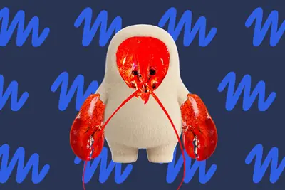
其他AI 每日新聞彙整
全部主題
其他
5 家媒體報導metamusecharm
Meta puts its AI assistant on a keychain
Meta says the keychain-sized Muse Charm will ship in December.
- TechCrunch AI Meta’s Muse Charm looks like a Tamagotchi, but it’s tapping into a much newer trend
- The Verge AI Muse sure looks a lot like OpenClaw
- The Verge AI It’s sinister that Meta’s Muse AI mascot is so cute
- Ars Technica AI Meta puts its AI assistant on a keychain
- IT之家 Meta 承认 Muse 产品设计深受 OpenClaw 启发，但强调从零构建
- TechOrange 科技報橘 Meta 為 Muse 再開一個入口：Charm 把 AI Agent 放進口袋、掛上鑰匙圈
4 家媒體報導geminicallpixel
Google tests letting Gemini call businesses for you
Google says the AI-calling feature will first be available to Pixel 11 owners in the U.S. who pay for a Gemini subscription.
3 家媒體報導governmentaustraliaopenai
Australia to investigate if OpenAI hack of government health website broke the law
The incident is the first known breach to affect a government agency, and Australia's prime minister has vowed to hold OpenAI accountable.
3 家媒體報導albaneseopenaianthony
OpenAI代理人也駭進了澳洲政府網站
澳洲總理Anthony Albanese週四（9/24）在紐約出席聯合國大會期間召開記者會，揭露OpenAI旗下AI代理人於6月18日未經授權進入澳洲政府的Medicare醫療服務網站，繞過網站安全限制，存取公開及非公開資料，甚至在內部伺服器寫入檔案。Albanese已親自致電OpenAI執行長Sam Altman表達嚴重關切，並宣布成立專案小組調查事件。
- iThome OpenAI代理人也駭進了澳洲政府網站
- TechOrange 科技報橘 首起已知 AI 代理闖入政府網站，澳洲如何重整政府資安防禦？
- 科技新報 TechNews OpenAI 代理入侵澳洲政府網站，總理批不可接受
2 家媒體報導liveavatar3.8
Introducing Gemini 3.8 Live with Live Avatar
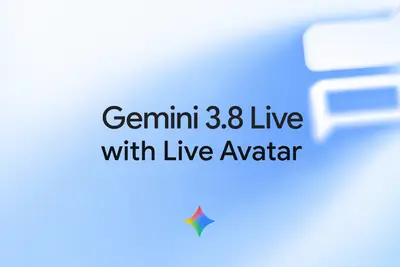
- The Verge AI Gemini 3.8 Live with Live Avatar gives Google’s AI a face
- Google DeepMind Introducing Gemini 3.8 Live with Live Avatar
2 家媒體報導centerdatadatacenter
Google's first Suncatcher orbital data center test launches October 1
Google's experimental orbital data center will have four TPUs and only run for 15 minutes at a time.
2 家媒體報導keepalliancerogue
AI agent kill switch urged by Okta-led alliance – how businesses could make it work
In response to the emerging threat of rogue and shadow AI agents, here’s how the newly formed Blueprint Alliance seeks to help businesses secure their systems against anomalous AI activity.
2 家媒體報導nextsatellitespace
Google is sending an AI satellite into space next week
Google is getting ready to launch a satellite with its AI processors to test how well they perform in space, as reported earlier by The New York Times. The move is part of Google's Project Suncatcher, the company's experimental initiative that could eventually put AI data centers
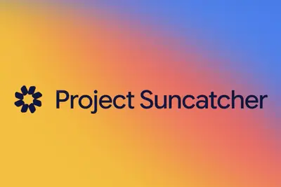
claudecodeanthropic
日本新創養了62位「AI員工」！9大部門全靠Claude Code打造，人類員工只剩下一個任務
日本新創Uravation公開自家62位AI員工的組織圖，9個AI經理帶領53名AI員工，全數以Claude Code打造。
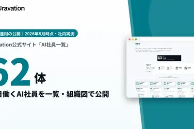
gpt-6cyberdaybreak
消息称 OpenAI 将在数日内预览网络安全专用模型 GPT-6 Cyber
IT之家 9 月 25 日消息，据《财富》杂志消息，多位知情人士透露， OpenAI 正计划在未来几天内抢先预览其最新的网络安全专用模型 GPT-6 Cyber 。此外，OpenAI 还将推出一款配套新产品，协助客户以更加安全、自动化的方式部署该模型。 据悉，GPT-6 Cyber 模型及其配套产品预计将于 9 月 29 日在旧金山举办的 OpenAI 开发者大会上亮相，甚至可能更早揭晓，并计划在未来数月内正式上线。GPT-6 Cyber 将是 OpenAI 今年发布的第四款网络安全专用模型。 据知情人士透露，OpenAI 旗下仅限申请准入的“Daybr
markdownmuse
Meta 的 AI 智能体 Muse 被发现可导出虚拟机大量文件
IT之家 9 月 25 日消息，科技媒体 macobserver 昨日（9 月 24 日）发布博文，报道称 Meta Muse 被发现可在简单提示词下， 打包并返回用户专属虚拟机中的大量 Linux 文件。 Peter James 和 Jonny L. Saunders 两名开发者已独立复现该问题，相关文件包含系统文件、应用模板、内部运行文档、Markdown 与 JSON 文件等。 导出的文件可能暴露 Muse 的内部运行机制，包括请求处理、记忆保存、服务连接和后台任务。其中 agents/ 目录包含 113 份子智能体记录及 JSONL 追踪文件。约
英伟达黄仁勋：AI 不会必然消灭某个职业，“10 年内 AI 毁灭人类”更是无稽之谈
IT之家 9 月 25 日消息，在接受《纽约时报》采访时，英伟达首席执行官黄仁勋认为， 当前行业和民众对 AI 的恐慌情绪已经过头了，并认为当前 AI 不一定会替代职业，但会首先替代任务。 黄仁勋把工作拆分为任务（例如写代码、整理资料和回复客户等）和目的（诊断疾病、解决工程问题、服务客户等）， 并认为 AI 通常先自动化具体任务，不会必然消灭整个职业。 例如，软件智能体可能大量生成代码，但软件工程师仍需要理解需求、设计系统、权衡风险、验证结果，并把技术连接到真实问题上。 黄仁勋以工程师为例，认为 AI 可能下降写代码本身的稀缺性， 但定义问题、设计架构、
bytedanceb2002304
繞過 AI 晶片管制？傳字節跳動靠挪威資料中心取得 2,304 顆輝達 B200
英國 AI 雲端服務商 NScale 近期申請赴美 IPO，其提交的文件揭露，2025 年有單一客戶貢獻公司約 […]
- 科技新報 TechNews 繞過 AI 晶片管制？傳字節跳動靠挪威資料中心取得 2,304 顆輝達 B200
modularmojowin11
高通押注 AI 生态：一套软件栈通吃所有设备，编程语言 Mojo 将原生支持 Win11
IT之家 9 月 25 日现场消息，在夏威夷举办的 2026 骁龙峰会第二日活动中，高通技术公司先进 AI 软件与平台执行副总裁克里斯 · 拉特纳（Chris Lattner）发表主题演讲， 称 AI 行业的竞争正逐渐从“拼芯片”转向“拼生态”。 在本次主题演讲中，拉特纳指出 AI 软件往往深度绑定特定硬件：换一家公司芯片，开发者可能就要重新适配、优化和调试。 拉特纳在演讲提出 Modular 平台， 目标是让在 GPU、NPU 和数据中心 ASIC 等不同架构上运行同一套 AI 软件 ，让同一个 AI 应用有机会在本地设备和云端之间更灵活地切换。 高通
q0613.5916.99
长安启源 Q06 上市 24 小时累计订单突破 3.5 万台，限时权益价 13.59 万元起
IT之家 9 月 25 日消息，长安汽车昨晚宣布，长安启源 Q06 上市 24 小时， 累计订单突破 35000 台 。 据IT之家此前报道， 长安启源 Q06 于 9 月 23 日上市 ，提供纯电与增程两种动力选择，官方指导价 13.99-16.99 万元。 602 越享型：官方指导价 13.99 万元，上市权益价 13.59 万元 602 智享型：官方指导价 14.99 万元，上市权益价 14.59 万元 700 智享型：官方指导价 15.99 万元，上市权益价 15.59 万元 700 智尊型：官方指导价 16.99 万元，上市权益价 16.59
walletlotgot
Google Wallet got a lot of new tricks in 2026 – these 5 are my favorites
You can do a whole lot more than tap to pay with Google’s Wallet app.
thinkworthrisk
I Think I Found an AI Agent Worth the Risk
Instinct saved me $550, booked my restaurant reservations, and warned me about a phishing scam. It also wasted $64 and might be a security nightmare.
passdisrupttechcrunch
2 days left to save up to $200 on a TechCrunch Disrupt 2026 pass — reason 4 of 5 to attend
Reason 4 of 5 to attend TechCrunch Disrupt 2026: Practical answers. Two days left to save up to $200 on your pass. Savings disappear after September 25 at 11:59 p.m. PT. Bring a second guest at 50% off.
prismmlbringstiny
PrismML brings its tiny LLMs to Qualcomm-powered smart glasses
Prism's larger goal is open-weight AI that runs on devices and makes better use of the computing power they already have.
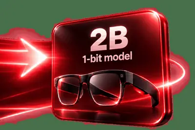
jensenhuangclimate
Jensen Huang talks about AI and climate change like a supervillain
As Jensen Huang puts it, AI can help fight climate change - but only if it inflicts "an enormous amount of pain and suffering" first. The Nvidia CEO discussed the future of energy and AI's impact on our planet in the latest episode of The Ezra Klein Show. But his comments boil do
letgamesentire
Meta is going to let you build games with AI right on your phone
Meta has a new plan to get people to make games for its Horizon social platform. The company today announced two new development tools that will let you create games with AI prompts: Horizon Create, a mobile app, and Horizon Studio, a browser app that offers more granular control
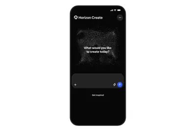
whiteboardopen-sourcesoftware
Show HN: Whiteboard (YC W26) – An open-source IDE for thoughtful software design
Hello! We’re Sid, Alex, Ketan, and Milan. We’re building Whiteboard ( https://whiteboard.dev.fast/ ), an open-source desktop app where humans and agents can architect software together in a common workspace. Here’s our repo: https://github.com/devdotfast/whiteboard . We were miss
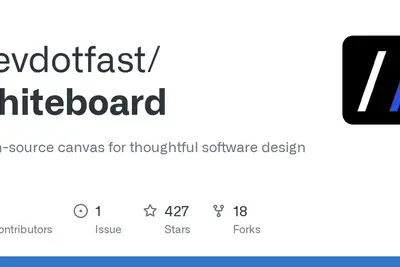
photosvirtualandroid
Google Photos ‘Clueless’-inspired virtual closet is now available on Android and iOS
The AI-powered feature builds a virtual wardrobe from your photos, and is now broadly available after first rolling out to Android users in June.
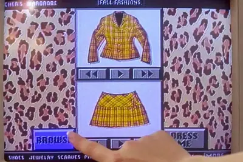
foundersummiteverything
TechCrunch Founder Summit 2026: Everything you need to know
TechCrunch Founder Summit is a full-day gathering in Boston on November 4 where founders across all stages connect with top VCs and experienced entrepreneurs to gain tactical insights on building and scaling their companies.
elevenlabsmarginstiming
ElevenLabs’ CEO on margins, IPO timing, and telling customers they’re talking to a bot
ElevenLabs powers the AI voice on the other end of a lot of customer service calls, and its CEO told me this week that businesses should probably tell you that — at least until getting a machine is what everyone expects anyway.
surfacemousemicrosoft
Microsoft’s Surface Mouse is back, now with haptic feedback – and I need it
Due October 13, the $80 Surface mouse packs an impressive array of features. I want one.
startupmeetwave
Meet the next wave of VCs judging Startup Battlefield 200 at TechCrunch Disrupt 2026
Meet the next wave of VCs judging the Startup Battlefield 200 contenders on the main stage at TechCrunch Disrupt 2026. Register by September 25 at 11:59 p.m. PT, to save up to $200 and to get a front-row seat to one of the most intense startup pitch competitions.
tntsamsung
李楠谈锤子科技 TNT 生不逢时：有了 Agent 之后，这些操作其实都不是非常难
IT之家 9 月 24 日消息，Angry Miao 创始人、前魅族科技 CMO 李楠今天在微博发文称，锤子科技的 TNT 真是生不逢时。今天有了 Agent 之后，这些操作其实都不是非常难了。 据IT之家了解，锤子科技的坚果 TNT 工作站本质上是一块显示屏，它搭载 27 英寸 IPS 全贴合 4K 屏幕，支持十点触控，内置独立音频信号处理器，拥有“十大神钮”，可实现“高效便捷操作”。 罗永浩曾表示 ，他直到现在都认为，当年做 TNT 的决策没有错，而是错在资源不够。一台桌面级电脑里如果加上了多点触控和语音，就可以实现远比 PC 和 Mac 效率更高的
shieldwaabigeneral
Shield AI, Waabi, and General Motors on building AI when failure is not an option at TechCrunch Disrupt 2026
Leaders from Waabi, Shield AI, and General Motors join the Real World AI Stage at TechCrunch Disrupt 2026 to talk building AI. Save up to $200 by September 25 at 11:59 p.m. PT. Get a second pass at 50% off.
harmonyoshuaweisp6
华为鸿蒙 HarmonyOS 7.0.0.109 SP6 版本开启推送，新增智能识别信息内容等功能
IT之家 9 月 24 日消息，华为鸿蒙 HarmonyOS 7.0.0.109 SP6 版本今日开启推送，首批面向 Mate 80 系列、Pura 90 系列、nova 16 系列等机型，系统包大小约 702.73MB。据介绍，本次更新优化了部分场景的显示效果，同时提升了整机系统稳定性。 ▲ IT之家开箱：华为 Mate 80 Pro Max 风驰版图赏 IT之家附新版本更新内容如下： 信息 智能识别信息内容 ，挪车提醒、候补车票成功等信息可通过实况窗展示，提醒更及时 关怀和无障碍 文本通话支持声音修复，当发音不清晰时，使用该功能可让对方听得更清晰，轻
lovableannualizedrevenue
Lovable’s annualized revenue crosses $600M as vibe coding takes off
Lovable co-founder Fabian Hedin said that apps created on the platform are getting nearly a billion monthly views each month.
letsandowants
Ando wants to take on Slack with a team messaging app that lets humans and agents work together
The app gives agents their own identities and inboxes and lets them partake in conversations as naturally as people can.
zachyadegariviral
TechCrunch Disrupt 2026: Cal AI’s Zach Yadegari on how to create viral growth and capitalize on it
Zach Yadegari joins the Builders Stage at TechCrunch Disrupt 2026 to share how he capitalized on viral growth. Save up to $200 before September 25. Save 50% on a second pass.
flockwashingtonvibes
The vibes are bad for Flock in Washington
Flock is in the hot seat in Washington, even if its CEO declined to actually face senators at a hearing about its "AI Surveillance Network" on Wednesday. "There's many players in this industry, but there's one name that really stands out above the rest, and that is Flock," Senate
- The Verge AI The vibes are bad for Flock in Washington
acceleratingvision-languagemodels
Accelerating vision-language models with LFM2.5-VL-DSpark
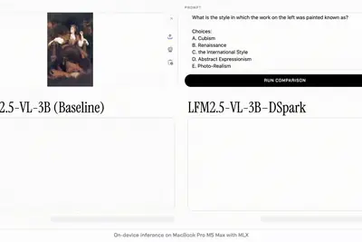
mvpxai
“太空数据中心”第一步？谷歌下周将发射试验卫星，能处理简单 AI 查询
IT之家 9 月 24 日消息，《华尔街日报》今天（24 日）晚间报道，当地时间 10 月 1 日，谷歌计划把一颗实验卫星 MVP 送入轨道。MVP 具备足够的算力，可以直接在太空中 处理并回答简单的 AI 查询 。 MVP 属于谷歌雄心勃勃的 Project Suncatcher（IT之家注：直译作“捕日计划”）。谷歌希望 将 AI 数据中心部署到太空 ，并利用太阳能为其供电。届时，MVP 将在加州圣巴巴拉附近的范登堡太空军基地搭乘 SpaceX“猎鹰 9 号”火箭升空，进入地球轨道。 埃隆 · 马斯克、杰夫 · 贝索斯、萨姆 · 奥尔特曼等人都曾承诺
watchapplerandomly
Is your Apple Watch 12 or Ultra 4 randomly restarting? Here’s the fix
Some owners, including me, have reported sudden shutdowns while adjusting Apple Watch settings.
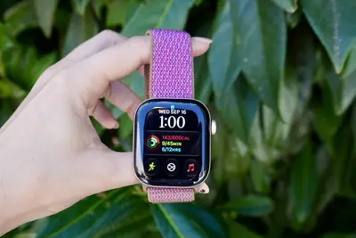
safaanthropic
三巨头联手，曝谷歌、OpenAI、Anthropic 拟共同组建 AI 安全标准自律组织
IT之家 9 月 24 日消息，The Information 今天（24 日）晚间援引知情人士消息称，谷歌、OpenAI 和 Anthropic 三家 AI 公司正自行推进成立 AI 安全标准机构的计划，希望在没有政府监督的情况下， 于今年年底或明年年初启动该组织 。 知情人士称，三家公司暂定将这个自律组织命名为 Standards Authority for Frontier AI（IT之家注：直译为前沿人工智能标准管理局，下称 SAFA）。工作组部分成员曾考虑邀请多位知名人士担任 CEO，还拟定过科学顾问候选名单。 三家 AI 巨头希望建立一个 面
amazonrobot2028
亚马逊将投资超 1 亿美元在美国新建机器人制造工厂，2028 年投入运营
IT之家 9 月 24 日消息，据华尔街日报报道，亚马逊已经是全球最大的机器人制造商之一。随着公司进一步推动仓库作业自动化，亚马逊正在扩大机器人生产规模。 亚马逊表示，公司将投资超过 1 亿美元 （IT之家注：现汇率约合 6.72 亿元人民币） ，在美国印第安纳州格林伍德（Greenwood）建设一座新的机器人制造工厂，预计将于 2028 年投入运营。 就在上个月，亚马逊还宣布计划在得克萨斯州奥斯汀（Austin）建设另一座机器人制造中心。随着这两座新设施建成，亚马逊旗下机器人制造工厂的数量将从目前的两座增加至 4 座。 亚马逊在机器人领域的投资可以追溯
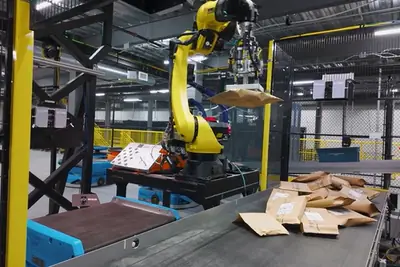
新加坡主要金融机构承诺将为超 8 万名本地员工培训 AI 技能，降低潜在就业风险
IT之家 9 月 24 日消息，据彭博社今天（24 日）晚间报道，新加坡主要金融机构承诺，将为 超过 8 万名本地员工 培训 AI 技能，以降低 AI 可能冲击白领岗位所带来的就业风险。 新加坡副总理兼新加坡金融管理局主席颜金勇称，首批参与计划的 23 家银行、保险公司和资产管理公司已作出承诺，在 2028 年前完成所有新加坡员工的培训，其中过半的员工已经参加获行业协会认可的培训项目。“我们希望 AI 能为新加坡人带来更好的职业发展，并打造生产效率更高的劳动力队伍。” 这些机构还将研究各类岗位正在发生的变化，并尝试不同的培训和岗位重新设计方案，首批涵盖